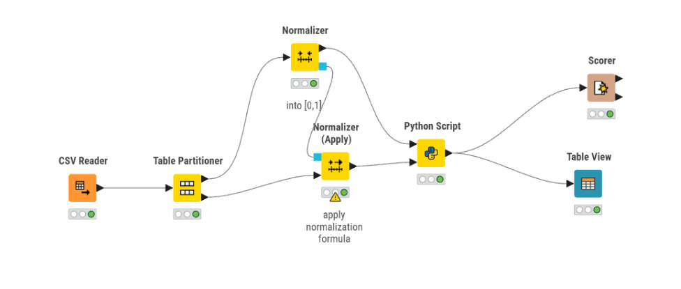
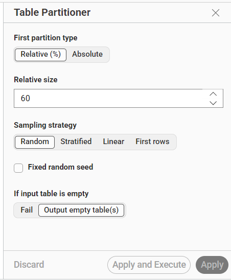
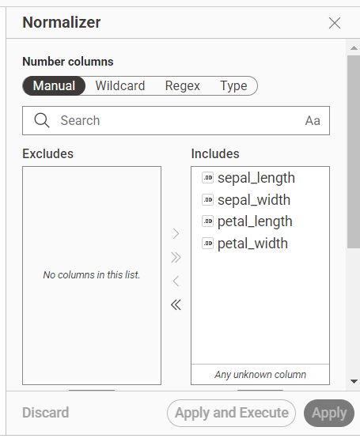
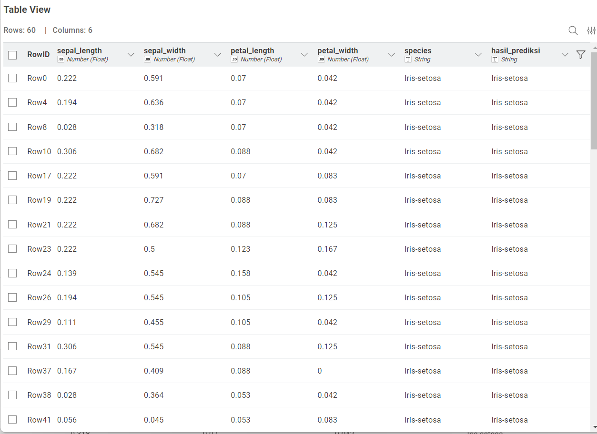
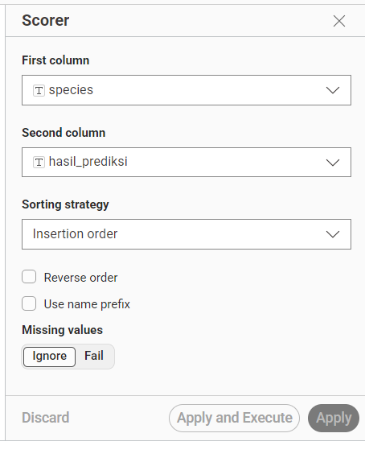
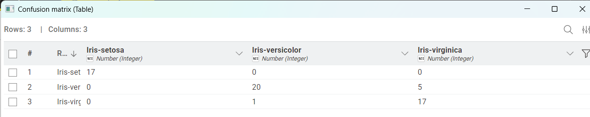

Pertemuan 10#
Laporan Proyek: Klasifikasi Naive Bayes Menggunakan KNIME dan Python (Sklearn)#
1. Pengertian Naive Bayes#
Naive Bayes adalah algoritma klasifikasi berbasis probabilitas yang menggunakan Teorema Bayes. Algoritma ini disebut “Naive” karena memiliki asumsi bahwa setiap fitur atau atribut pada data bersifat independen, yaitu tidak saling memengaruhi satu sama lain. Walaupun dalam kondisi nyata fitur-fitur dalam dataset sering kali memiliki hubungan, Naive Bayes tetap banyak digunakan karena sederhana, cepat, dan cukup baik untuk berbagai kasus klasifikasi.
Pada proyek ini, jenis Naive Bayes yang digunakan adalah Gaussian Naive Bayes. Metode ini cocok digunakan karena dataset IRIS memiliki fitur berupa angka kontinu, seperti panjang sepal, lebar sepal, panjang petal, dan lebar petal.
2. Rumus Teorema Bayes#
Rumus dasar Teorema Bayes adalah sebagai berikut:
P(C|X) = (P(X|C) x P(C)) / P(X)
Keterangan:
P(C|X): peluang suatu data termasuk ke dalam kelas C berdasarkan atribut X.
P(X|C): peluang munculnya atribut X jika diketahui kelasnya adalah C.
P(C): peluang awal kemunculan kelas C.
P(X): peluang kemunculan atribut X.
3. Jenis-Jenis Naive Bayes#
Beberapa jenis utama Naive Bayes adalah sebagai berikut:
Gaussian Naive Bayes
Digunakan untuk data numerik kontinu. Contohnya adalah dataset IRIS yang memiliki atributsepal_length,sepal_width,petal_length, danpetal_width.Multinomial Naive Bayes
Digunakan untuk data berbentuk frekuensi, misalnya klasifikasi teks berdasarkan jumlah kemunculan kata.Bernoulli Naive Bayes
Digunakan untuk data biner, yaitu data yang hanya memiliki dua kemungkinan nilai, seperti ya/tidak atau 0/1.
4. Kelebihan Naive Bayes#
Kelebihan algoritma Naive Bayes antara lain:
Proses komputasi cepat dan efisien.
Mudah digunakan untuk klasifikasi data.
Cocok untuk dataset sederhana maupun dataset berdimensi cukup tinggi.
Tidak membutuhkan data latih yang terlalu besar untuk menghasilkan performa yang cukup baik.
Dapat diimplementasikan dengan mudah menggunakan library Python seperti scikit-learn.
TUGAS#
Laporan Proyek: Klasifikasi Naive Bayes Menggunakan KNIME dan Python (Sklearn)#
5. Deskripsi Proyek#
Proyek ini bertujuan untuk membangun model klasifikasi menggunakan algoritma Gaussian Naive Bayes dari library scikit-learn Python yang dijalankan di dalam platform KNIME. Dataset yang digunakan adalah dataset IRIS, yaitu dataset yang berisi data ukuran bunga Iris.
Dataset IRIS memiliki beberapa atribut numerik, yaitu:
sepal_lengthsepal_widthpetal_lengthpetal_width
Selain itu, dataset ini juga memiliki kolom target atau label, yaitu:
species
Kolom species berisi kelas jenis bunga Iris, seperti:
Iris-setosaIris-versicolorIris-virginica
Tujuan dari proyek ini adalah membuat model klasifikasi yang dapat memprediksi jenis bunga Iris berdasarkan nilai fitur sepal dan petal. Proses pembuatan model dilakukan dengan menggabungkan workflow visual di KNIME dan pemrograman Python menggunakan node Python Script.
6. Visualisasi Workflow#

Gambar 1. Workflow klasifikasi Naive Bayes menggunakan KNIME dan Python Script.
Langkah-Langkah Pembuatan Workflow#
7. Membaca Data Menggunakan CSV Reader#
Node: CSV Reader
Fungsi:
Node CSV Reader digunakan untuk membaca dataset IRIS dari file CSV ke dalam lingkungan kerja KNIME. File yang dibaca berisi data bunga Iris dengan beberapa kolom fitur numerik dan satu kolom target.
Konfigurasi:
Pada node CSV Reader, file dataset dipilih dari direktori lokal komputer. Setelah file berhasil dibaca, data akan masuk ke dalam KNIME dan dapat digunakan pada proses selanjutnya.
8. Membagi Data Latih dan Data Uji Menggunakan Table Partitioner#
Node: Table Partitioner
Fungsi:
Node Table Partitioner digunakan untuk membagi dataset menjadi dua bagian, yaitu data latih dan data uji. Data latih digunakan untuk melatih model, sedangkan data uji digunakan untuk menguji kemampuan model dalam melakukan prediksi.
Konfigurasi:
Partition type: Relative (%)
Relative size: 60
Sampling strategy: Random
Berdasarkan konfigurasi tersebut, sebanyak 60% data digunakan sebagai data latih, sedangkan 40% data digunakan sebagai data uji. Strategi sampling yang digunakan adalah Random, sehingga pembagian data dilakukan secara acak.
Pembagian ini penting agar model tidak hanya menghafal data, tetapi juga dapat diuji menggunakan data yang berbeda dari data latih.

Gambar 2. Konfigurasi Table Partitioner dengan pembagian 60% data latih dan 40% data uji.
9. Normalisasi Data Latih Menggunakan Normalizer#
Node: Normalizer
Fungsi:
Node Normalizer digunakan untuk mengubah skala nilai pada fitur numerik agar berada dalam rentang yang sama. Normalisasi dilakukan agar fitur dengan skala nilai yang lebih besar tidak mendominasi proses pembelajaran model.
Kolom yang dinormalisasi:
sepal_lengthsepal_widthpetal_lengthpetal_width
Konfigurasi:
Pada proyek ini, kolom numerik dipilih secara manual pada bagian Includes. Proses normalisasi dilakukan ke dalam rentang nilai 0 sampai 1. Hasil dari node ini adalah data latih yang sudah dinormalisasi dan model normalisasi yang berisi informasi skala dari data latih.

Gambar 3. Konfigurasi Normalizer pada kolom numerik dataset IRIS.
10. Menerapkan Normalisasi ke Data Uji Menggunakan Normalizer Apply#
Node: Normalizer (Apply)
Fungsi:
Node Normalizer Apply digunakan untuk menerapkan rumus normalisasi dari data latih ke data uji. Dengan cara ini, data uji akan memiliki skala yang sama dengan data latih.
Konfigurasi:
Node ini menerima dua input, yaitu:
Model normalisasi dari node Normalizer.
Data uji dari hasil pembagian node Table Partitioner.
Penggunaan Normalizer Apply merupakan langkah yang penting karena dapat mencegah terjadinya data leakage. Data leakage adalah kondisi ketika informasi dari data uji secara tidak langsung ikut digunakan dalam proses pelatihan model. Dengan menerapkan model normalisasi dari data latih ke data uji, proses evaluasi menjadi lebih tepat.
11. Implementasi Naive Bayes Menggunakan Python Script#
Node: Python Script
Fungsi:
Node Python Script digunakan untuk menjalankan kode Python di dalam KNIME. Pada node ini, algoritma Gaussian Naive Bayes digunakan untuk melatih model dan melakukan prediksi terhadap data uji.
Proses yang dilakukan:
Membaca data training dan testing dari input KNIME.
Memisahkan kolom fitur dan kolom label/target.
Membuat model Gaussian Naive Bayes.
Melatih model menggunakan data latih.
Melakukan prediksi terhadap data uji.
Menambahkan hasil prediksi ke dalam kolom baru bernama
hasil_prediksi.Mengirim hasil akhir kembali ke KNIME.
Menampilkan laporan evaluasi klasifikasi menggunakan
classification_report.
Script yang Digunakan#
import knime.scripting.io as knio
import pandas as pd
from sklearn.naive_bayes import GaussianNB
from sklearn.metrics import classification_report
# Membaca data training dan testing dari input KNIME
data_latih = knio.input_tables[0].to_pandas()
data_uji = knio.input_tables[1].to_pandas()
# Memisahkan kolom fitur dan kolom label/target
fitur_latih = data_latih.iloc[:, :-1]
label_latih = data_latih.iloc[:, -1]
fitur_uji = data_uji.iloc[:, :-1]
label_uji = data_uji.iloc[:, -1]
# Membuat dan melatih model Naive Bayes Gaussian
model_nb = GaussianNB()
model_nb.fit(fitur_latih, label_latih)
# Melakukan prediksi terhadap data uji
hasil_prediksi = model_nb.predict(fitur_uji)
# Menambahkan hasil prediksi ke dalam data uji
hasil_akhir = data_uji.copy()
hasil_akhir["hasil_prediksi"] = hasil_prediksi
# Mengirim hasil akhir kembali ke KNIME
knio.output_tables[0] = knio.Table.from_pandas(hasil_akhir)
# Menampilkan laporan evaluasi klasifikasi
print(classification_report(label_uji, hasil_prediksi))
Penjelasan Script#
Pada script tersebut, data latih dan data uji dibaca dari input node Python Script menggunakan knio.input_tables. Data tersebut kemudian diubah menjadi dataframe pandas agar dapat diproses menggunakan library Python.
Selanjutnya, data dipisahkan menjadi fitur dan label. Fitur diambil dari semua kolom kecuali kolom terakhir, sedangkan label diambil dari kolom terakhir. Dalam dataset ini, kolom label adalah species.
Model dibuat menggunakan GaussianNB() dari library sklearn.naive_bayes. Setelah model dilatih menggunakan data latih, model digunakan untuk memprediksi data uji. Hasil prediksi tersebut kemudian ditambahkan ke dataframe data uji dalam kolom baru bernama hasil_prediksi.
Output dari Python Script dikirim kembali ke KNIME dalam bentuk tabel menggunakan knio.Table.from_pandas().
12. Menampilkan Hasil Prediksi Menggunakan Table View#
Node: Table View
Fungsi:
Node Table View digunakan untuk menampilkan hasil akhir dari proses klasifikasi. Pada tabel ini, data uji ditampilkan bersama label asli dan hasil prediksi model.
Kolom yang ditampilkan:
sepal_lengthsepal_widthpetal_lengthpetal_widthspecieshasil_prediksi
Kolom species menunjukkan label asli dari dataset, sedangkan kolom hasil_prediksi menunjukkan hasil prediksi yang dihasilkan oleh model Gaussian Naive Bayes.

Gambar 4. Hasil prediksi model pada Table View dengan kolom
speciesdanhasil_prediksi.
13. Evaluasi Model Menggunakan Scorer#
Node: Scorer
Fungsi:
Node Scorer digunakan untuk mengevaluasi performa model klasifikasi. Evaluasi dilakukan dengan membandingkan label asli dengan label hasil prediksi.
Konfigurasi:
First column:
speciesSecond column:
hasil_prediksiSorting strategy: Insertion order
Missing values: Ignore
Kolom species digunakan sebagai label asli, sedangkan kolom hasil_prediksi digunakan sebagai hasil prediksi dari model.

Gambar 5. Konfigurasi Scorer untuk membandingkan kolom
speciesdanhasil_prediksi.
Hasil Evaluasi Scorer#

Gambar 6. Hasil evaluasi model menggunakan Scorer.
Jika pada hasil Scorer muncul nilai akurasi yang tinggi, maka model dapat dikatakan mampu melakukan klasifikasi data IRIS dengan baik. Apabila terdapat kesalahan prediksi, kesalahan tersebut biasanya terjadi antara kelas Iris-versicolor dan Iris-virginica karena kedua kelas tersebut memiliki karakteristik fitur yang cukup mirip.
14. Hasil dan Pembahasan#
Berdasarkan workflow yang telah dibuat, proses klasifikasi dataset IRIS menggunakan algoritma Gaussian Naive Bayes berhasil dijalankan di dalam KNIME. Proses dimulai dari pembacaan dataset menggunakan node CSV Reader, kemudian data dibagi menjadi data latih dan data uji menggunakan node Table Partitioner.
Pada proyek ini, pembagian data dilakukan dengan rasio 60% data latih dan 40% data uji menggunakan strategi Random. Setelah itu, data latih dinormalisasi menggunakan node Normalizer pada kolom numerik, yaitu sepal_length, sepal_width, petal_length, dan petal_width.
Data uji kemudian dinormalisasi menggunakan node Normalizer Apply. Hal ini dilakukan agar data uji memiliki skala yang sama dengan data latih, sehingga proses prediksi menjadi lebih konsisten dan terhindar dari data leakage.
Model Gaussian Naive Bayes dibuat dan dijalankan melalui node Python Script. Model dilatih menggunakan data latih, kemudian digunakan untuk memprediksi data uji. Hasil prediksi ditambahkan ke dalam tabel dengan nama kolom hasil_prediksi.
Hasil akhir dapat dilihat melalui node Table View. Pada Table View, terdapat kolom species sebagai label asli dan kolom hasil_prediksi sebagai hasil prediksi dari model. Selanjutnya, evaluasi model dilakukan menggunakan node Scorer dengan membandingkan kolom species dan hasil_prediksi.
Dari proses tersebut, dapat diketahui apakah model berhasil melakukan klasifikasi dengan baik. Jika sebagian besar nilai pada kolom hasil_prediksi sama dengan nilai pada kolom species, maka model memiliki performa klasifikasi yang baik.